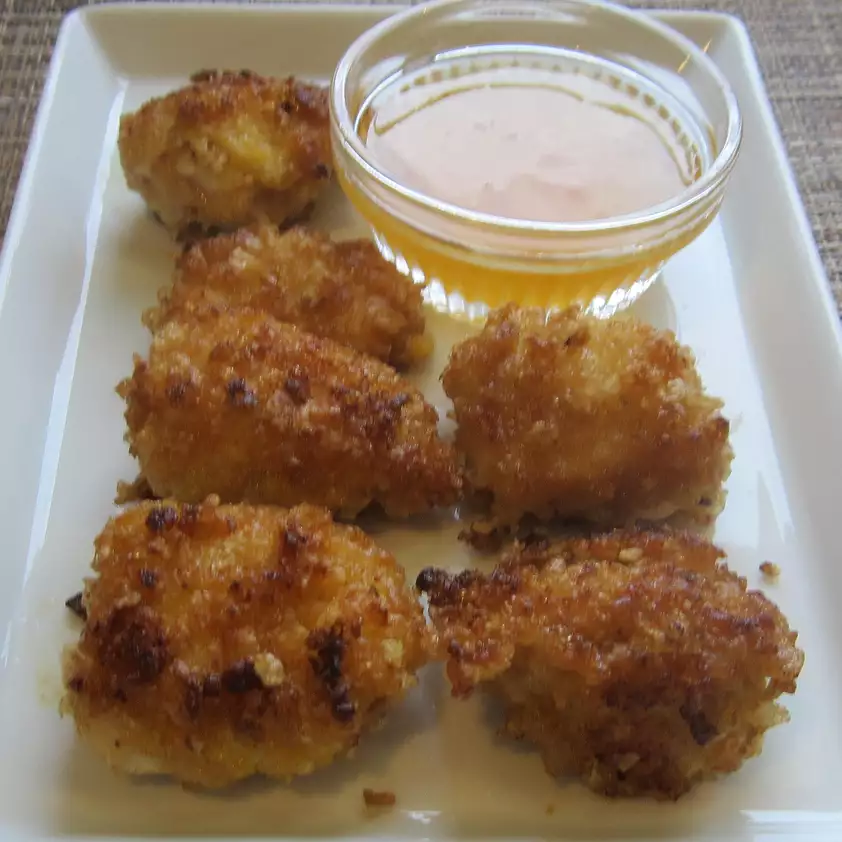

"This is an easy and quick kids meal.
- 1 egg
- Salt and ground pepper to taste
- 2 1/2 cups crispy rice cereal (such as Rice Krispies), crushed
- 1 1/4 pounds skinless, boneless chicken breasts, cut into 20 pieces
- 1/4 cup extra-virgin olive oil
- 2 tablespoons butter
- 1/2 cup apricot preserves
- 2 tablespoons water
- Beat egg, salt, and pepper together in a bowl. Pour crushed cereal into a
separate bowl. Coat chicken pieces in egg mixture. Press chicken pieces
into cereal until coated.
- Heat oil and butter together in skillet over medium heat; cook and stir
chicken until coating is golden brown and meat is no longer pink in the
center, about 7 minutes.
- Whisk preserves and water together in a saucepan over medium-low until
heated through and smooth, 2 to 3 minutes. Serve apricot sauce with
chicken nuggets.